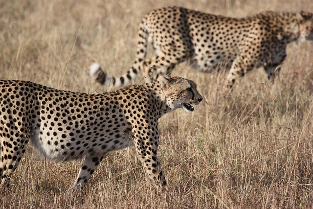

Цікаві Факти про Гепардів.
1. Гепард — найшвидший наземний ссавець, він здатний досягати швидкостей, від 80 до 112 км/год.
2. Приручених гепардів у минулому використовували для полювання на антилоп, у тому числі їх тримали й руські князі.
3. Плями для кожного гепарда є унікальними рисами, вони допомагають замаскуватися під час полювання.
4. Більшу частину свого життя гепарди проводять за відпочинком. Лише 12% доби вони активно рухаються.
5. Гепарди не вміють гарчати, на відміну від інших представників роду котячих.
6. Гепарди відрізняються найбільшою активністю на сході сонця та у вечірній час доби. У спекотну погоду вони переважно відпочивають у тіні.
7. Вчені вважають, що під час останнього льодовикового періоду представники виду ледь не вимерли. Результатом стало суттєве скорочення популяції.
8. Під час бігу голова гепарда добре стабілізована за рахунок будови хребта. Це дозволяє знизити вібрації і зберігати високу чіткість зору.
9. Коли гепарди чимось незадоволені або в момент агресії вони голосно шиплять.
10. Між собою гепарди спілкуються звуками, що нагадують писк упереміш з нявканням.
11. Під час полювання гепард повільно і довго переслідує свою жертву, намагаючись наблизитися до неї максимально близькі для швидкої атаки.
12. На волі гепарди живуть в середньому близько двадцяти років, в неволі — до тридцяти п’яти.
Перейти до наступної тварини